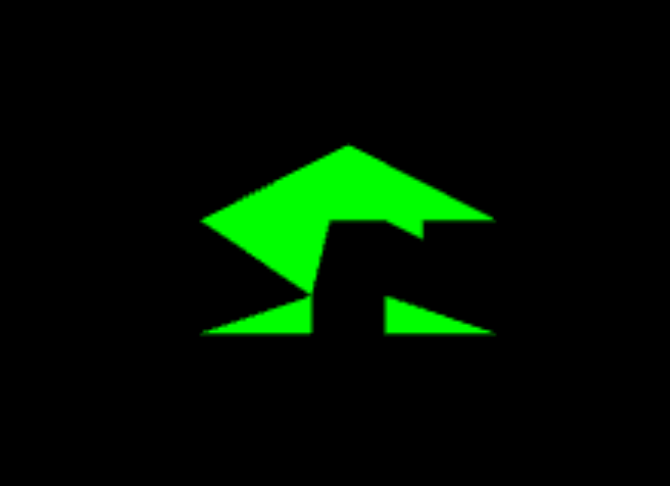

Memoria
Descripción de la práctica
Primer contacto con WebGL utilizando la biblioteca Three.js
Ejercicio 1
- Probar que WebGL está disponible -
Resumen: Simplemente se comprueba si WebGL está disponible en el navegador.
Ejercicio 2
- Cubo de frente -
Resumen: Podría ser un cubo de frente o un cuadrado, se aclarará en próximos ejercicios.
Ejercicio 3
- Rotaciones -
Resumen: Ahora ya está todo claro, era un cubo de frente.
Ejercicio 4
- Geometrías básicas -
Resumen: Cubo, cilindro y esfera.
Ejercicio 5
- Geometría Personalizada (La casa) -
Resumen: Crear geometrías personalizadas con vertices y triángulos, de primera mano cuesta entender, también se hizo la construcción de una hermosa casa.
El proceso es bonito en esta vida:

Ejercicio 6
- Iluminación y materiales -
Resumen: Escena final que combina todas las geometrías con diferentes materiales e iluminación.
Dificultades encontradas
Entender la creación de geometrías personalizadas y el concepto de crearlas a base de triángulos.